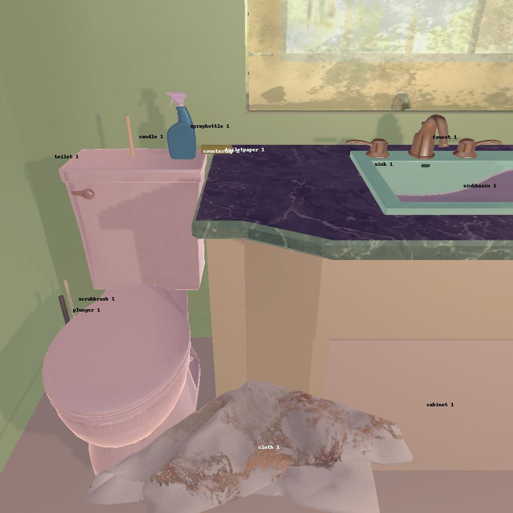

---------------------------------------------------------task: 11---------------------------------------------------------
--------------------------------------------------------------------------------------------------------------------------------------------------------------------
--------------------------------------------------------------------------------------------------------------------------------------------------------------------
Step:--------------------------------------------------------------------------10-------------------------------------------------------------------------------
----------------------------------------
VLM Prompt:
Image1:
Image2:
Image3:
**Instruction**
1. Analyze the provided image to identify all visible household objects, focusing on those relevant to the task description "clean some soapbar and put it in bathtubbasin."
2. Use the analysis of the image and the task hint "The agent must find an object of the desired type, pick it up, go to a sink or a basin, clean the object with a sink or basin, and then find the correct location to place it and put it down there. The agent does not need to use soap bottle or faucet to clean the object, and the agent just needs to do action that is "clean the object with the sink or sink basin"." to answer the question: what is the most reasonable action in the choices for the task description "clean some soapbar and put it in bathtubbasin"?
4. Decide and write the answer using the template: The answer is: (i): , where i is the real number. If there is no desired object in the image, search every place based on **Initial Observation** to find the object. And if no one is exactly correct, choose a similar answer.
**Initial Observation**
You are in the middle of a room. Looking quickly around you, you can see bathtub (1), bathtubbasin (1), toilet (1), cabinet (1-2), countertop (1), sink (1), sinkbasin (1), garbagecan (1)
**Answer Choices**
(1): go to bathtub 1
(2): go to bathtubbasin 1
(3): go to toilet 1
(4): go to countertop 1
(5): go to sink 1
(6): go to cabinet 2
(7): go to garbagecan 1
(8): put cloth 1 in/on sinkbasin 1
(9): clean cloth 1 with bathtub 1
(10): clean cloth 1 with bathtubbasin 1
(11): clean cloth 1 with sink 1
(12): clean cloth 1 with sinkbasin 1
(13): examine cloth 1
(14): examine sinkbasin 1
**Answer**
Let's think step by step by following the instructions.
----------------------------------------
----------------------------------------
Original Response:
Firstly, the task is to clean a soapbar and put it in the bathtubbasin. From the initial observation, we can see that there is a bathtubbasin (1) present in the room, which will be the final location to place the cleaned soapbar.
From the images provided, there is no visible soapbar, which means we need to search for it based on the initial observation. Since soapbars are typically found in the bathroom area, we can rule out irrelevant objects like the toilet, garbage can, and cloth. We should focus on areas where a soapbar might be located, such as the sink, countertop, or cabinet.
The most reasonable action from the choices provided, considering the task description and the hint that the agent does not need to use a soap bottle or faucet to clean the object, would be to:
1. Find the soapbar by searching the likely locations: the sink, countertop, or cabinet.
2. Once the soapbar is found, go to the sink or sinkbasin to clean it, as mentioned in the hint.
3. After cleaning the soapbar, go to the bathtubbasin to place it there.
Based on the answer choices given, we need to first locate the soapbar. Since it is not visible in the images, we should search the areas where it is most likely to be found. Thus, the most reasonable action would be to go to the cabinet where the soapbar might be stored.
The answer is: (6): go to cabinet 2.
----------------------------------------
----------------------------------------
>>> Refine Original VLM Response and Get Pure Action: go to cabinet 2
----------------------------------------
-----------------------------------------------------------------
Running time: 12.74939513206482 seconds
Total Money: 6.663110000000001
-----------------------------------------------------------------
-----------------------------------------------------------------
Text Observation:You arrive at loc 7. The cabinet 2 is closed.
-----------------------------------------------------------------
UNSUCCEED